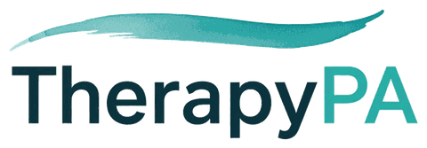
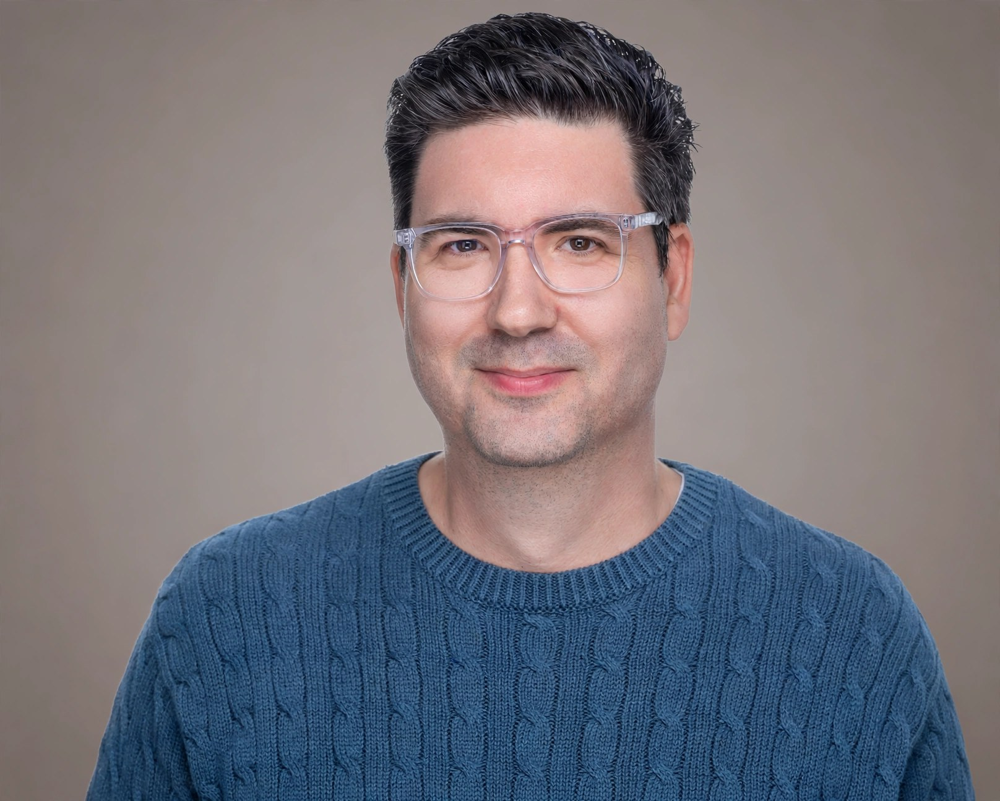

Grief that will not settle? Work that looks fine from the outside and feels empty inside? Thoughts that will not quiet down?
Therapy is a particular kind of conversation, one that is all about you. You do not need the right words yet. We can start with what is bringing you in.
Schedule a Free ConsultationOffers Telehealth
Appointments
Accepts
Online Payments
Licensed in
Pennsylvania
Free 20-Minute
Consultation
About
Hi, I’m Bill. I’m a Licensed Clinical Social Worker in Pennsylvania, and TherapyPA is my solo virtual practice. I work with adults whose lives look steady from the outside while something underneath is not: grief that has not loosened its grip, anxiety that keeps the mind running, and the particular exhaustion of people who are used to holding it together for everyone else.
My approach is unhurried and conversational. Patterns we carry, in how we grieve, work, and relate to the people closest to us, were usually learned early and for good reasons. They run quietly, though, and they shape choices long after the reasons have changed. In therapy we slow down enough to notice those patterns, understand where they came from, and loosen the ones that no longer serve you.
Self-understanding is not the end goal. The aim is to put it to work: grieving without getting stuck in it, working without burning out, and being in your relationships in ways that feel more honest and more sustainable.
I am licensed in Pennsylvania, and all sessions are held by secure video. My practice focuses on the five-county Philadelphia area: Philadelphia, Bucks, Chester, Delaware, and Montgomery counties.
On a personal note, I am a lifelong Philadelphian and a runner. I live here with my family, and most weekends you can find me on one of the city’s running routes with a camera in hand.

Approaches
Location
TherapyPA is a virtual-only practice. There is no office to find and no buzzer to press: sessions happen by secure video, from wherever in Pennsylvania you are most comfortable talking.
TherapyPA
Philadelphia, Pennsylvania
Home ground is the five-county Philadelphia area:
All appointments are held by secure video for clients located in Pennsylvania at the time of session.
Scheduling, forms, and payments run through a secure client portal, so everything lives in one place.
Questions
For self-pay, it is $200 per session. Payment is by credit or debit card through the secure client portal, or by Venmo. Depending on availability, I may be able to offer a reduced fee based on financial need.
Yes. A free 20-minute consultation so we can see if we’re a good fit. We’ll talk about what brings you in, any questions you have, and what working together would look like.
All sessions are held online through secure telehealth, for adults located in Pennsylvania.
Not yet. I am currently credentialing with Independence Blue Cross (IBX) for in-network therapy. Until credentialing clears, sessions are private pay. I provide superbills (a detailed receipt) you can submit to your insurer for out-of-network reimbursement.
You pay me directly. I provide a superbill on request. You submit it to your insurance company. Your insurance may reimburse part of the cost.
You will have to call your insurance company and ask the following questions: Do I have out-of-network mental health benefits? Is prior authorization required? Do I need to pay an annual deductible first? What is the reimbursement rate? Are there any session limits per year? What information is needed on the superbill? How do I submit the superbill (online, mail, app)? How long does it take to be reimbursed?
No. For private-pay therapy, no referral or preauthorization is needed. If you plan to use out-of-network benefits, your insurer may have its own requirements, so it is worth a quick call to them first.
We’ll talk about what brings you in, what you want to be different, and how we might work together. There’s no pressure to have it all figured out. Beginning where you are is the whole point.
Please give at least 24 hours’ notice if you need to cancel or reschedule. Late cancellations and missed sessions are charged the full fee, except in true emergencies.
Getting Started
Start with a free 20-minute consultation, by video or phone, for adults in Pennsylvania. It is a chance to talk through what you are dealing with and see whether we would be a good fit.
Reaching out does not commit you to anything. Pick a time below that works for you.
TherapyPA is a private-pay practice. Independence Blue Cross (IBX) credentialing is in progress.